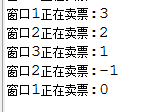
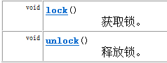
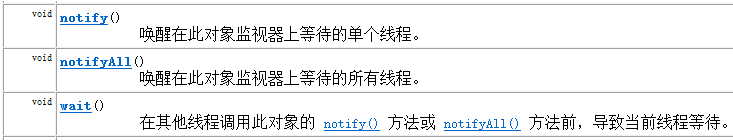
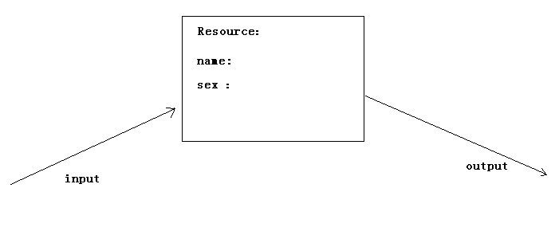

如果有多个线程在同时运行，而这些线程可能会同时运行这段代码。程序每次运行结果和单线程运行的结果是一样的，而且其他的变量的值也和预期的是一样的，就是线程安全的。
我们通过一个案例，演示线程的安全问题：
电影院要卖票，我们模拟电影院的卖票过程。假设要播放的电影是 “功夫熊猫3”，本次电影的座位共100个(本场电影只能卖100张票)。
我们来模拟电影院的售票窗口，实现多个窗口同时卖 “功夫熊猫3”这场电影票(多个窗口一起卖这100张票)
需要窗口，采用线程对象来模拟；需要票，Runnable接口子类来模拟
测试类
public class ThreadDemo {
public static void main(String[] args) {
//创建票对象
Ticket ticket = new Ticket();
//创建3个窗口
Thread t1 = new Thread(ticket, "窗口1");
Thread t2 = new Thread(ticket, "窗口2");
Thread t3 = new Thread(ticket, "窗口3");
t1.start();
t2.start();
t3.start();
}
}模拟票
public class Ticket implements Runnable {
//共100票
int ticket = 100;
@Override
public void run() {
//模拟卖票
while(true){
if (ticket > 0) {
//模拟选坐的操作
try {
Thread.sleep(1);
} catch (InterruptedException e) {
e.printStackTrace();
}
System.out.println(Thread.currentThread().getName() + "正在卖票:" + ticket--);
}
}
}
运行结果发现：上面程序出现了问题
票出现了重复的票
错误的票 0、-1
其实，线程安全问题都是由全局变量及静态变量引起的。若每个线程中对全局变量、静态变量只有读操作，而无写操作，一般来说，这个全局变量是线程安全的；若有多个线程同时执行写操作，一般都需要考虑线程同步，否则的话就可能影响线程安全。
java中提供了线程同步机制，它能够解决上述的线程安全问题。
线程同步的方式有两种：
方式1：同步代码块
方式2：同步方法
同步代码块: 在代码块声明上 加上synchronized
synchronized (锁对象) {
可能会产生线程安全问题的代码
}同步代码块中的锁对象可以是任意的对象；但多个线程时，要使用同一个锁对象才能够保证线程安全。
使用同步代码块，对电影院卖票案例中Ticket类进行如下代码修改：
public class Ticket implements Runnable {
//共100票
int ticket = 100;
//定义锁对象
Object lock = new Object();
@Override
public void run() {
//模拟卖票
while(true){
//同步代码块
synchronized (lock){
if (ticket > 0) {
//模拟电影选坐的操作
try {
Thread.sleep(10);
} catch (InterruptedException e) {
e.printStackTrace();
}
System.out.println(Thread.currentThread().getName() + "正在卖票:" + ticket--);
}
}
}
}
}当使用了同步代码块后，上述的线程的安全问题，解决了。
同步方法：在方法声明上加上synchronized
public synchronized void method(){
可能会产生线程安全问题的代码
}同步方法中的锁对象是 this
使用同步方法，对电影院卖票案例中Ticket类进行如下代码修改：
public class Ticket implements Runnable {
//共100票
int ticket = 100;
//定义锁对象
Object lock = new Object();
@Override
public void run() {
//模拟卖票
while(true){
//同步方法
method();
}
}
//同步方法,锁对象this
public synchronized void method(){
if (ticket > 0) {
//模拟选坐的操作
try {
Thread.sleep(10);
} catch (InterruptedException e) {
e.printStackTrace();
}
System.out.println(Thread.currentThread().getName() + "正在卖票:" + ticket--);
}
}
}静态同步方法: 在方法声明上加上static synchronized
public static synchronized void method(){
可能会产生线程安全问题的代码
}静态同步方法中的锁对象是 类名.class
同步锁使用的弊端：当线程任务中出现了多个同步(多个锁)时，如果同步中嵌套了其他的同步。这时容易引发一种现象：程序出现无限等待，这种现象我们称为死锁。这种情况能避免就避免掉。
synchronzied(A锁){
synchronized(B锁){
}
}我们进行下死锁情况的代码演示：
定义锁对象类
public class MyLock {
public static final Object lockA = new Object();
public static final Object lockB = new Object();
}线程任务类
public class ThreadTask implements Runnable {
int x = new Random().nextInt(1);//0,1
//指定线程要执行的任务代码
@Override
public void run() {
while(true){
if (x%2 ==0) {
//情况一
synchronized (MyLock.lockA) {
System.out.println("if-LockA");
synchronized (MyLock.lockB) {
System.out.println("if-LockB");
System.out.println("if大口吃肉");
}
}
} else {
//情况二
synchronized (MyLock.lockB) {
System.out.println("else-LockB");
synchronized (MyLock.lockA) {
System.out.println("else-LockA");
System.out.println("else大口吃肉");
}
}
}
x++;
}
}
}测试类
public class ThreadDemo {
public static void main(String[] args) {
//创建线程任务类对象
ThreadTask task = new ThreadTask();
//创建两个线程
Thread t1 = new Thread(task);
Thread t2 = new Thread(task);
//启动线程
t1.start();
t2.start();
}
}查阅API，查阅Lock接口描述，Lock 实现提供了比使用 synchronized 方法和语句可获得的更广泛的锁定操作。
Lock接口中的常用方法

Lock提供了一个更加面对对象的锁，在该锁中提供了更多的操作锁的功能。
我们使用Lock接口，以及其中的lock()方法和unlock()方法替代同步，对电影院卖票案例中Ticket类进行如下代码修改：
public class Ticket implements Runnable {
//共100票
int ticket = 100;
//创建Lock锁对象
Lock ck = new ReentrantLock();
@Override
public void run() {
//模拟卖票
while(true){
//synchronized (lock){
ck.lock();
if (ticket > 0) {
//模拟选坐的操作
try {
Thread.sleep(10);
} catch (InterruptedException e) {
e.printStackTrace();
}
System.out.println(Thread.currentThread().getName() + "正在卖票:" + ticket--);
}
ck.unlock();
//}
}
}
}在开始讲解等待唤醒机制之前，有必要搞清一个概念——线程之间的通信：多个线程在处理同一个资源，但是处理的动作（线程的任务）却不相同。通过一定的手段使各个线程能有效的利用资源。而这种手段即—— 等待唤醒机制。
等待唤醒机制所涉及到的方法：
wait（） :等待，将正在执行的线程释放其执行资格 和 执行权，并存储到线程池中。
notify（）：唤醒，唤醒线程池中被wait（）的线程，一次唤醒一个，而且是任意的。
notifyAll（）： 唤醒全部：可以将线程池中的所有wait() 线程都唤醒。
其实，所谓唤醒的意思就是让 线程池中的线程具备执行资格。必须注意的是，这些方法都是在 同步中才有效。同时这些方法在使用时必须标明所属锁，这样才可以明确出这些方法操作的到底是哪个锁上的线程。
仔细查看JavaAPI之后，发现这些方法 并不定义在 Thread中，也没定义在Runnable接口中，却被定义在了Object类中，为什么这些操作线程的方法定义在Object类中？
因为这些方法在使用时，必须要标明所属的锁，而锁又可以是任意对象。能被任意对象调用的方法一定定义在Object类中。

接下里，我们先从一个简单的示例入手:

如上图说示，输入线程向Resource中输入name ,sex , 输出线程从资源中输出，先要完成的任务是：
1.当input发现Resource中没有数据时，开始输入，输入完成后，叫output来输出。如果发现有数据，就wait();
2.当output发现Resource中没有数据时，就wait() ；当发现有数据时，就输出，然后，叫醒input来输入数据。
下面代码，模拟等待唤醒机制的实现：
模拟资源类
public class Resource {
private String name;
private String sex;
private boolean flag = false;
public synchronized void set(String name, String sex) {
if (flag)
try {
wait();
} catch (InterruptedException e) {
e.printStackTrace();
}
// 设置成员变量
this.name = name;
this.sex = sex;
// 设置之后，Resource中有值，将标记该为 true ,
flag = true;
// 唤醒output
this.notify();
}
public synchronized void out() {
if (!flag)
try {
wait();
} catch (InterruptedException e) {
e.printStackTrace();
}
// 输出线程将数据输出
System.out.println("姓名: " + name + "，性别: " + sex);
// 改变标记，以便输入线程输入数据
flag = false;
// 唤醒input，进行数据输入
this.notify();
}
}输入线程任务类
public class Input implements Runnable {
private Resource r;
public Input(Resource r) {
this.r = r;
}
@Override
public void run() {
int count = 0;
while (true) {
if (count == 0) {
r.set("小明", "男生");
} else {
r.set("小花", "女生");
}
// 在两个数据之间进行切换
count = (count + 1) % 2;
}
}
}输出线程任务类
public class Output implements Runnable {
private Resource r;
public Output(Resource r) {
this.r = r;
}
@Override
public void run() {
while (true) {
r.out();
}
}
}测试类
public class ResourceDemo {
public static void main(String[] args) {
// 资源对象
Resource r = new Resource();
// 任务对象
Input in = new Input(r);
Output out = new Output(r);
// 线程对象
Thread t1 = new Thread(in);
Thread t2 = new Thread(out);
// 开启线程
t1.start();
t2.start();
}
}